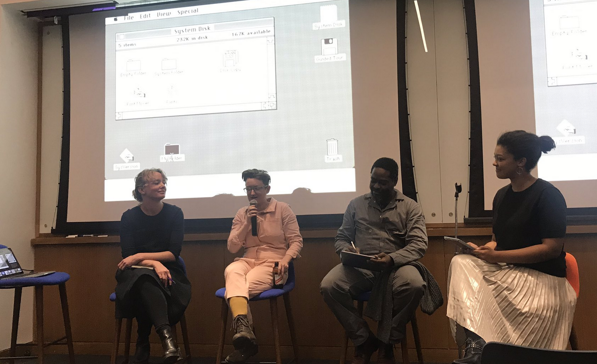

5. Complication of the Computer Mouse
An 11 minute single channel video presented as a part of my masters thesis at NYU. If interested you can e-mail me for a link to the whole video.
4. Computer Mouse Conference 2019
The first ever Computer Mouse Conference, co-organized by myself and Ashley Jane Lewis.
3. A Scrolling Lecture
This was presented as a performance lecture in Spring 2019.

2. Close To The Metal
An essay written for Real Life Magazine on the value of re-introducing friction in our interactions with computers

1. Anti-capitalist Mouse
This is a failed attempt at building a mouse that would violently shake any time your cursor went over an advertisement. It would also not allow you to buy anything...in retrospect it ended up living up to its name because it didn't work.